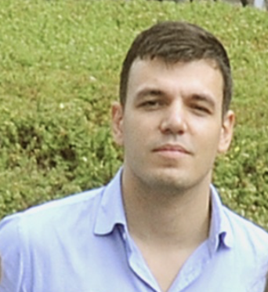

David Pelosi
Ph.D. Candidate at
University of Perugia, Department of Physics and Geology
Member of the Alpha Magnetic Spectrometer (AMS-02) Collaboration;
Associate Member of the European Organization for Nuclear Research (CERN)
Research Interests
- Galactic Cosmic Rays
- Space Radiation Studies and Space Weather Applications
- Astroparticle Physics
- Computational Physics
- Statistics
Selected Publications
-
A forecasting framework for galactic cosmic ray flux in space weather applications
Article
D. Pelosi et al., Advances in Space Research 76 (2025) 5700–5713 -
Properties of Cosmic Lithium Isotopes Measured by the Alpha Magnetic Spectrometer
Article
M. Aguilar et al. (AMS Collaboration), Phys. Rev. Lett. 134 (2025) 201001 -
Antiprotons and Elementary Particles over a Solar Cycle: Results from the Alpha Magnetic
Spectrometer
Article
M. Aguilar et al. (AMS Collaboration), Phys. Rev. Lett. 134 (2025) 051002 -
Solar Modulation of Cosmic Nuclei over a Solar Cycle: Results from the Alpha Magnetic
Spectrometer
Article
M. Aguilar et al. (AMS Collaboration), Phys. Rev. Lett. 134 (2025) 051001
Education
M.Sc. in Physics (Apr 2023)
- A Numerical Model for the Transport of Cosmic Rays in the Heliosphere
- Specialization: Astrophysics and Astroparticle Physics
- Supervisor: Nicola Tomassetti
- Università degli Studi di Perugia, Dipartimento di Fisica e Geologia, Italy
B.Sc. in Physics (Jun 2020)
- Development of a Web Application for Monitoring Cosmic Radiation and Solar Activity
- Supervisor: Nicola Tomassetti
- Co-supervisor: M. Duranti
- Università degli Studi di Perugia, Dipartimento di Fisica e Geologia, Italy
Fellowships and Grants
Invited Visiting Researcher (Jan 2026 – Mar 2026)
- Location: Laboratório de Instrumentação e Física Experimental de Partículas (LIP), Lisbon, Portugal
- Contact person: Fernando José de Carvalho Barão
Scientific Research Grant (Mar 2025 – Jun 2025)
- SCOSTEP Visiting Scholar (SVS) Program 2025
- Position: Visiting Researcher
- Location: Space Physics and Astronomy Research Unit, University of Oulu, Finland
- Funding: Scientific Committee on Solar-Terrestrial Physics (SCOSTEP)
Scientific Research Grant (Mar 2025 – Jun 2025)
- Advancing Galactic Cosmic Ray Modeling and Its Implications for Atmospheric Chemistry and Climate Dynamics
- Position: Visiting Researcher
- Location: Space Physics and Astronomy Research Unit, University of Oulu, Finland
- Funding: Geomagnetic Excursions/Reversals: Assessment of Climate Impacts in Silico (GERACLIS), funded by the Research Council of Finland (2023–2027), hosted by the University of Oulu in consortium with the Finnish Meteorological Institute
- Contact persons: Ilya Usoskin, Pauli Väisänen
Ph.D. Grant (Oct 2023 – Oct 2026)
- Topic: Phenomenological Study of Energetic Charged Radiation in Space
- Position: Ph.D. Student
- Funding: University of Perugia
Postgraduate Research Fellow (Jan 2022 – Oct 2023)
- Topic: Implementation of an Efficient Model for Predicting the Flux of Galactic Cosmic Rays
- Position: Master Student
- Project: Comprehensive spAce wEather Studies for the ASPIS Prototype Realization (CAESAR), supported by the Italian Space Agency (ASI) and the National Institute for Astrophysics (INAF)
Awards
Franco Mariani Award (Nov 2024)
- The “Premio Franco Mariani” is awarded by the Space Weather Italian Community (SWICO) for the best master’s thesis in Space Weather research.